Vamos a describir las diferentes páginas y funcionalidades de la web y cómo se van a mostrar para los distintos tipos de usuario.
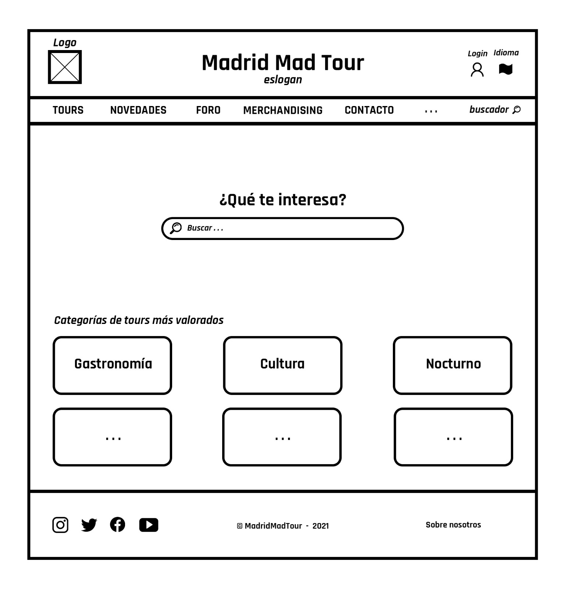 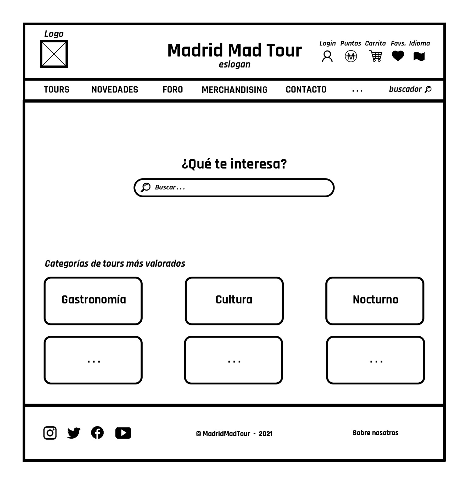Como vemos en la imagen, la cabecera de nuestras páginas será diferente dependiendo de si el usuario está registrado o no. Así en común para todos estará nuestro logo a la izquierda, en el centro se mostrará nuestro nombre y eslogan. Para los usuarios no registrados se mostrará el icono de un usuario en el que se podrá registrar y también el botón para seleccionar el idioma. Por otra parte, los usuarios registrados les aparecerá el icono de usuario que será para acceder al perfil propio, el icono de los puntos de la página que mostrará cuántos tenemos, el icono del carrito para saber que tenemos en la lista de compra, un corazón que te llevará a las rutas que has realizado que te han gustado y por último para cambiar el idioma. La cabecera tendrá abajo para todos los usuarios un menú en el que podremos acceder a todas las funcionalidades de la página web, también habrá un pequeño buscador para acceder a cosas más específicas.
La página de inicio de la web estará compuesta en el centro de un buscador en el que poder buscar los tours que queramos al momento. Abajo del buscador saldrán las categorías de tours que más éxito han tenido en nuestra página y que podrían interesarle a los usuarios.
El pie de página se encontrará en todas las páginas de la web y les aparecerá igual a todos los tipos de usuario. Se compone de nuestras redes sociales, una opción para ponerse en contacto con nosotros en caso de necesitar algún tipo de ayuda, las políticas de privacidad de nuestra web y una opción "Sobre nosotros" en la que respondemos qué somos y cómo hacemos los tours.
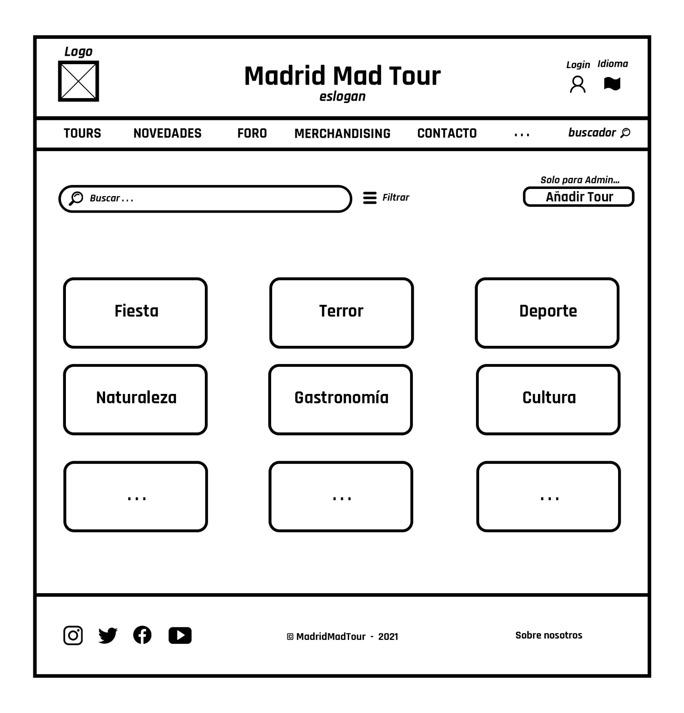La página en la se encuentran los tours estará compuesta en la parte superior con un buscador, para facilitar la búsqueda de cualquier tour específico, y se pueden aplicar filtros de búsqueda también según lo que quiera buscar el usuario (mejor valoración, más buscado, más vendido, etc.). También en la parte superior izquierda se encontrará tan sólo para los usuarios de tipo administrador la opción de añadir un nuevo tour o eliminar algún tour de la página web. Abajo del buscador aparecerán las categorías de los tours que tenemos disponibles en la página, el cual será un botón que te llevará a los tours que engoblan la categoría que ha seleccionado el usuario.
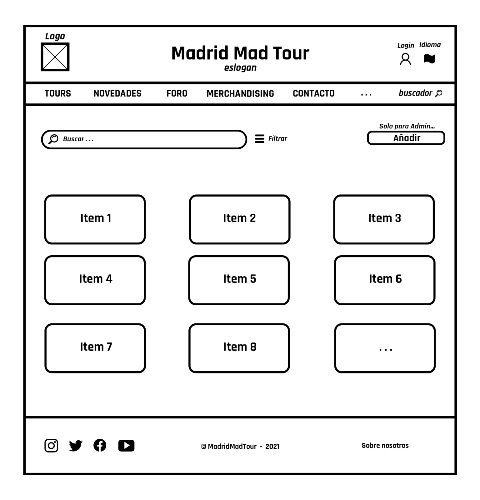También disponemos de una tienda de merchandising, la cual tendrá un aspecto parecido a la anterior nombrada. Tendrá un buscador junto a una opción de filtrado en la que el usuario podrá buscar de forma más selectiva y eficiente el producto que desee. Los administradores tendrán una opción en la que podrán añadir o eliminar cualquier producto de la tienda. Abajo de los buscadores se mostrarán los diferentes productos que están disponibles en nuestra tienda.
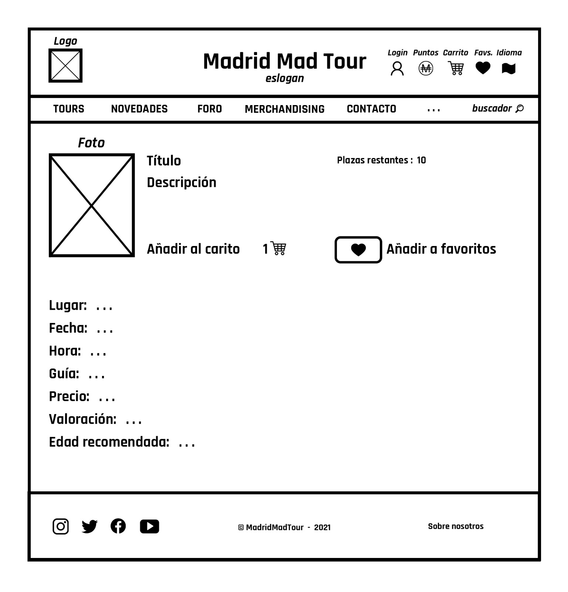Para acceder a la información más específica de un tour e incluso para poder comprarlo, el usuario debe estar registrado, si no lo está no podrá acceder a esta página. Al haberme registrado podremos acceder a esta página en la se recoge la principal información de los diferentes tours. En primer lugar disponemos de diferentes fotos del tour, contendrá también un título y una breve descripción de la actividad que se va a realizar. Abajo de las fotos se encontrará la información más relevante respecto al lugar, hora, guía, precio, etc. También aparecerá una opción para permitir añadir al carrito junto a otros tours que hayas escogido. Se mostrarán las plazas disponibles para el tour en la parte superior derecha. También habrá una opción para añadir ese tour a favoritos.
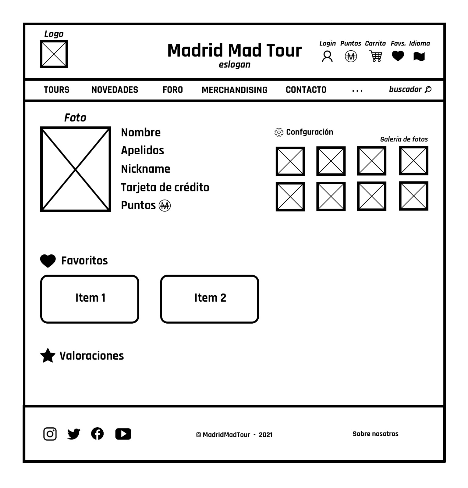El perfil lo tienen aquellos usuarios que se han registrado, sino no aparecería esta opción. El perfil en la parte posterior izquierda se encuentra una foto de perfil junto a los principales datos del usuario (Nombre, apellidos, nickname, puntos, etc.). También dispone de una galería en la que puede subir y actualizar fotos de los diferentes tours que haya participado y que considera que es interesante a compartir con el resto de usuarios. En la parte baja derecha del perfil se encontrarán la lista de los tours y artículos que tenemos seleccionados como favoritos. También se mostrarán las valoraciones que has dado a los diferentes tours. En la parte baja izquierda del perfil se encontrará la opción de banear o eliminar dicho usuario por parte tan sólo de los usuarios que son de tipo admin.
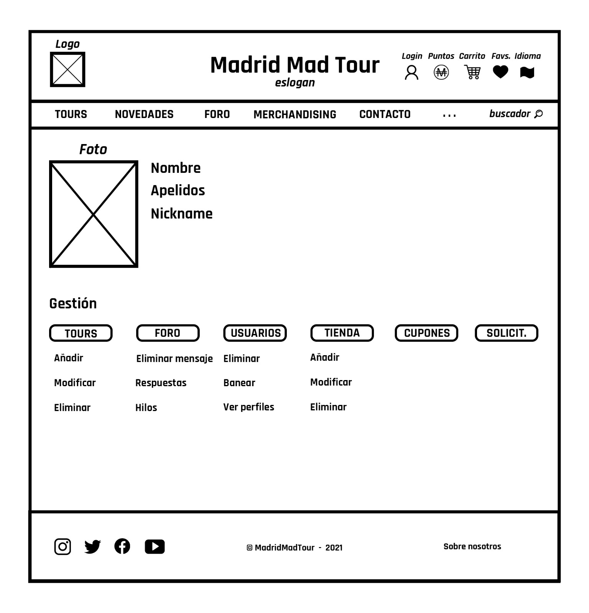El perfil de los admin está compuesto también por una foto de perfil y datos personales como el nombre, apellidos y nickname. En la parte baja del perfil aparecerán muchas opciones de gestión repartidas en tablas formadas por las diferentes funcionalidades de la página.
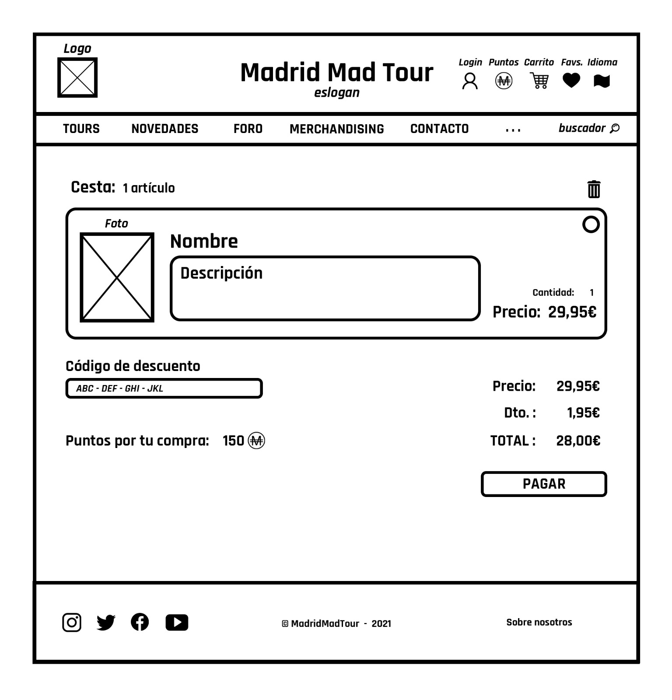Para acceder al carrito de la compra se necesita estar registrado. Aparecerán los diferentes artículos que hemos seleccionado con unas breves características (Imágenes, título, precio, etc.). Los productos o tours aparecerán en cuadros independientes que se podrán marcar por si queremos eliminar algún producto mediante la papelera que aparecerá en la parte superior derecha. Podremos aplicar como usuario algún tipo de descuento que queramos aplicar o usar nuestros puntos que hemos obtenido en la página con anteriores compras. Hay que marcar el cuadro del descuento si queremos que se nos aplique a esta compra o no. Y en la parte inferior izquierda se encuentra el botón de pagar el cual efectuará y validará la compra.
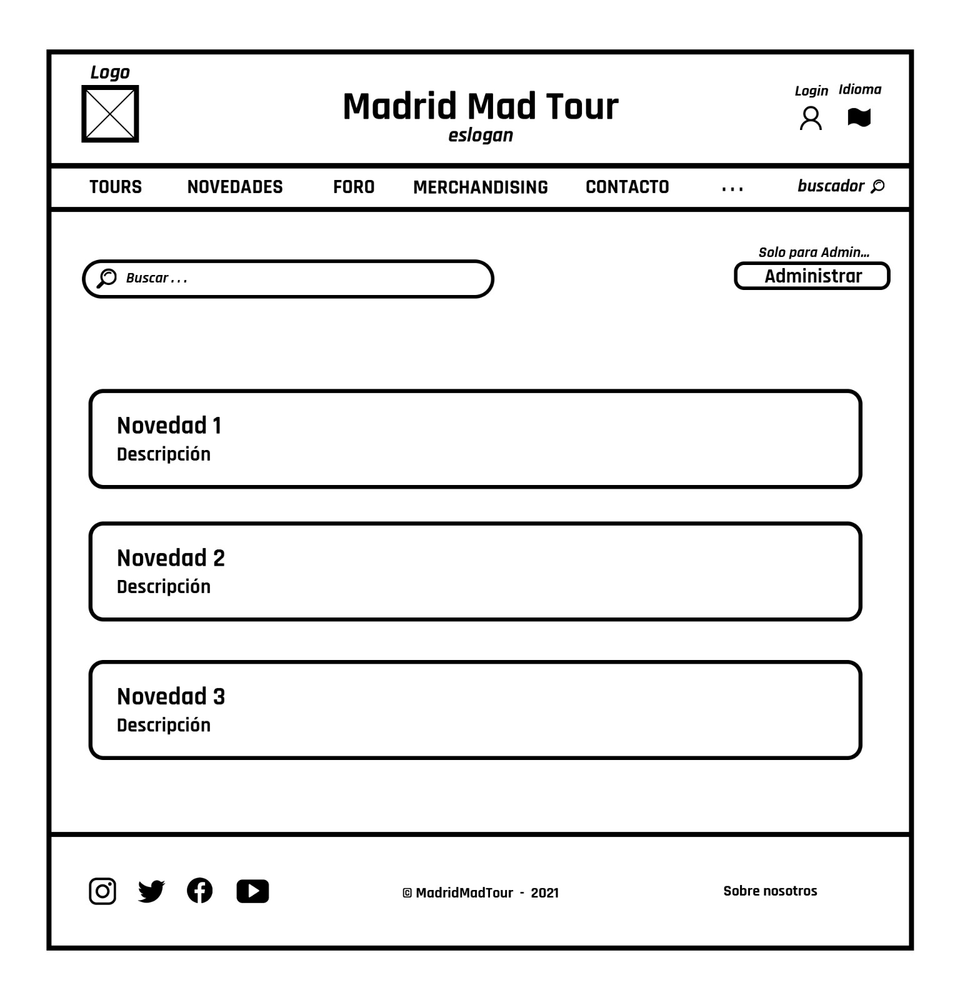La página de novedades será visible por todos los tipos de usuario. En la parte superior izquierda se encuentra una barra de búsqueda y una opción de filtrado para poder acceder de manera más rápida y eficaz a las noticias que le interesen al usuario. En la parte superior derecha se encontrará la opción de administrar las novedades pero que sólo se les mostrará a los admin. El resto de la página mostrará las diferentes novedades que hay en nuestra página web en las que se desglosarán según la fecha del más reciente. Cada noticia tendrá su recuadro el cual mostrará un breve resumen junto al titular de la misma.
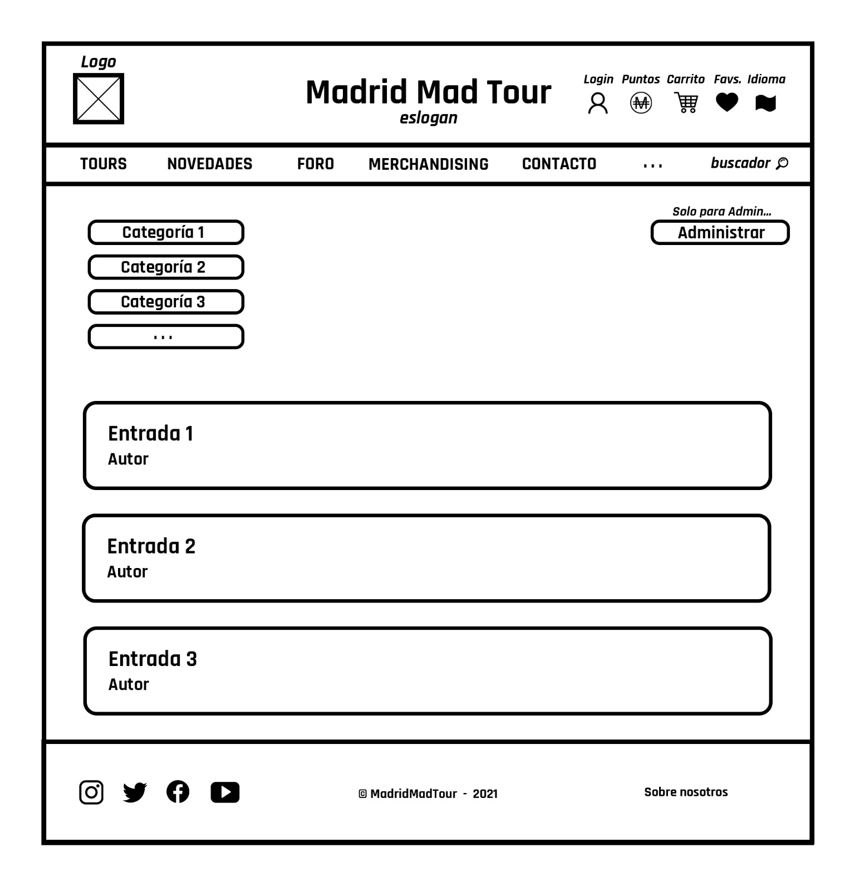Para poder acceder al foro se necesitará estar registrado. Como en novedades, el usuario admin podrá administrar el foro. El foro contendrá en la parte superior izquierda una tabla en la que se verán las diferentes categorías de los temas que se tratan en el foro. En el resto de la página se mostrarán los diferentes temas del foro ordenado por actividad por defecto. Se mostrarán los temas en pequeños recuadros en los que se especificará una breve descripción del tema que se trata en ese foro.
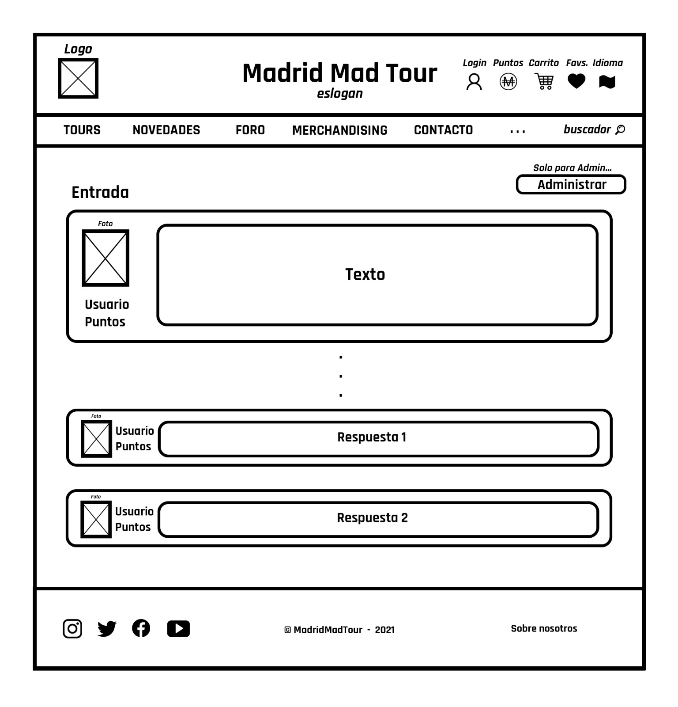La entrada de un foro sólo podrá ser accedida si el usuario se ha registrado. También, como en las anteriores, los usuarios admin podrán administrar dicha entrada del foro. Las entradas del foro están compuestas por un cuadro principal (que será más grande y de un color más llamativo que el resto) que mostrará el tema principal de esa entrada del foro. Este cuadro contendrá un título, la foto, puntos y nickname del usuario que lo ha publicado y el texto del tema en cuestión que se va a tratar. El resto de cuadros serán las respuestas de otros usuarios tratando de resolver las diferentes dudas o problemas que le puedan surgir a nuestros usuarios. Estos cuadros tendrán un color más suave para que se diferencien cuáles son las repuestas a esa entrada del foro.